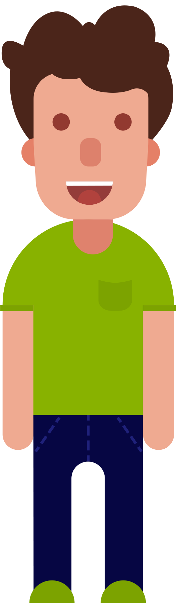

<!-- info page modal start -->
<div class="modal fade modal-fullscreen" id="After2Modal" tabindex="-1" role="dialog" aria-labelledby="myModalLabel" aria-hidden="true">
    <div class="modal-dialog">
        <div class="modal-content">
            <div class="modal-header">
                <button class="infoPage_cross close" data-dismiss="modal" aria-hidden="true">
                    <span class="fui-cross-circle"></span>
                </button>
                <button class="infoPage_home" onclick="window.location.href='main.html'">
                    
                </button>
            </div>
            <div class="modal-body">
                <div class="container-fluid">
                    <div class="header">
                        <p id="header">Proceed to safe spot</p>
                    </div>
                    <div class="row">
                        <div class="col-md-4 ">
                            
                        </div>
                        <div class="col-md-4">
                            
                        </div>
                        <div class="col-md-4">
                            
                        </div>

                    </div>
                    <div class="row">
                        <div class="col-md-4">

                        </div>
                        <div class="col-md-4">
                            
                        </div>
                        <div class="col-md-4">

                        </div>
                    </div>
                </div>
            </div>
        </div>
        <!-- /.modal-content -->
    </div>
    <!-- /.modal-dialog -->
</div>
<!-- modal end -->

<script>
    $("#After2Modal .infoPage_cross.close").on("click", function (e) {
        window.location.href = 'main.html#fourthSection';
        $.fn.fullpage.destroy('all');
        fullpage(true);
    })
</script>